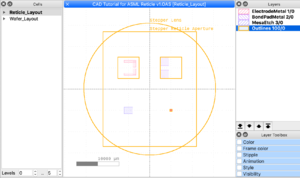

ASML 5500 Mask Making Guidelines
Jump to navigation
Jump to search
Design Guidelines
- Layer-to-layer alignment marks are provided by an ASML mask in our system. No need to put alignment marks on your CAD file.
- Spacing between mask-plate fields : 1mm of Chrome between fields (at 1x wafer scale) in order for the reticle masking blades to blank off unwanted areas.
- Field Sizes Available (at Wafer-Scale, 1x):
- The full field useable exposure area is limited to the intersection of a 31mm diameter circle and a rectangle of dimensions 22mm x 27mm. See the schematic below for an illustration.
- For High Resolution 0.63 NA: 21mm in X, 21mm in Y
- For 0.4 to 0.57 NA: 22mm in X, 22mm in Y
- Other rectangular sizes available, that fit within the lens/aperture intersection:
- 21mm x 23mm (X width x Y height)
- 20mm x 24mm
- 19mm x 25mm
- 18mm x 25.5mm
- 17mm x 26mm
- 16mm x 26.5mm
- 15mm x 27mm
- In general, 250nm resolution will resolve over the entire field. Anything smaller than this may not resolve closer to the edges of the field where lens quality degrades, and will also have a smaller viable process window (tolerance of exposure/bake/develop parameters). A number of users have shot ~150nm features.

Example of a Reticle with 4 Images in separate quadrants, with ≥1mm of chrome between Images (printed with polygons are CLEAR (whitespace is DARK Cr) right reading Cr DOWN). The Outlines layer (#100) is a construction layer only and should not be printed. See Example CAD for the full file.
Vendor Instructions
- Use commercial mask/reticle houses: Photronics, Toppan, Compugraphics, etc.
- Instruct vendor that this will be used on an ASML 5500/300 system with 4x reduction. They have all outer templates to make your mask match our system. You just provide them the data you want printed, at wafer-scale (1X), and they'll scale it up 4x and insert it into their template.
- Academic users may use the UCSB-specific quotes we have negotiated for pricing. Industrial users will have to get their own pricing.
- Email Brian Thibeault or Demis D. John for info.
- Academic users may use the UCSB-specific quotes we have negotiated for pricing. Industrial users will have to get their own pricing.
- Reduction is 4X, instruct the mask makers to scale your CAD data to 4X size, which will determine price via 4x magnified feature sizes. Scale your mask critical dimensions (CD) and tolerances from the product quotes accordingly.
- Mirroring: Right reading (aka. legible) with Chrome Down.
- Masks must be Quartz, 6" x 6" x 0.25” thick. Pellicles are not typically used, but are allowed.
- Barcode text ("Title to appear on the mask") for the plate must be 12 characters or less. Specify the exact text you desire. This exact text is what you type into the ASML job program, so make it simple eg. “DEMISJAN2020”. Allowed Characters: integers 0-9, upper case letters A-Z, and five special characters: %, +, $, –, and “space”
- Example Toppan Order Form via Digidat
Submission Details
When submitting the photo mask order, the following notes/definitions apply:
- "Grade" determines the price, and is chosen based on required feature size (smaller feature size is more expensive). Although you will submit your CAD file at 1x wafer scale, the actual reticle is printed 4x larger. Make sure to choose your reticle grade accounting for this; eg. If I want to shoot 1.0µm lines, I should choose a photomask grade better/equal to 4.0µm.
- “GDS Level” is also known as “layer number”
- "topcell" is which Cell in your CAD file contains the heirarchy of patterns to print.
- Typically printed "Right reading (legible) with Chrome Down", if your CAD is exactly what you want on the wafer.
- “Min. Feature on Mask” refers to minimum clear or chrome feature, assuming features similar to lines/spaces.
- “Min. Contact” refers to features with aspect ratio close to 1:1, eg. Squares and circles. These have a separate spec due to the manufacturing process, so make sure to choose the appropriate grade of photomask with this in mind.
- Choose a Critcal Dimension “CD” similar to your most critical feature (scaled to the 4x reticle scale), so they will print & measure & guarantee test structures at that size.
- For UCSB purchases: you will need to submit your order in UCSB Procurement Gateway first (as a "Non-Catalogue Item"), with the cost estimate & grade/product code from our negotiated quote, so that you can get the Purchase Order (PO) Number. Then submit the order form to the photomask vendor with this PO number entered on their order form.
- Request our negotiate quote (for ACADEMICS ONLY) from Demis or Brian.
Templates
- Example Toppan Order Form via Digidat
- Fill out this Spreadsheet before programming your job on the machine, using your CAD file:
- ASML Reticle Programming Params - MASKJAN2020 v1.xlsx (example for fictional barcode "MASKJAN2020")
- GDS CAD file for for the ASML on-wafer alignment marks:
- ASML On Wafer Mark.gds
- This is the "PM" or "Primary Mark" image, in "right reading" orientation, wafer flat down (negative Y), "objects are clear" polarity.
- NOTE: this alignment mark is not symmetric - it will not work properly if mirrored or rotated.
- This pattern is available on a system reticle - you are not required to include this pattern in your own designs.
Example CAD File and Programming
Using an Example CAD file, here is the corresponding Mask Order Form & Spreadsheet:
- Example CAD file from Utilities > CAD Layout > Example CAD File, designed in KLayout.
- Example "ASML Reticle Programming Params" spreadsheet for reticle "DEM-2020-03"
- Example Reticle Order Form for reticle "DEM-2020-03"
CAD Tips
- By default, Wafer flat is Down (–Y) with respect to your CAD file.
- Utilize the "Cell" and "Cell Instancing" functionality in your CAD layout program! (aka. a "Block" in AutoCAD). See Calculators + Utilities > CAD Design Tips for tutorials.
- Center your entire design around the coordinates (0,0). (0,0) should always be the center of your device, wafer and/or photomask/reticle.
- Inside each sub-Cell, also design around the cell's (0,0) origin.
- Create a Cell called "reticle_layout" or similar, that is an exact representation of what the printed reticle should look like (at 1x wafer-scale). Instance the Device's Cells into the reticle_layout, and reference this Cell on your mask order form. (You can also Instance the same cells into a "device_layout" and "wafer_layout" cells during design/verification.)
- If you follow the above rules, your printed "RETICLE" cell will have Instances of each of your design's Images/patterns, and the coordinates/sizes of these Cells are exactly what you type into your ASML program.